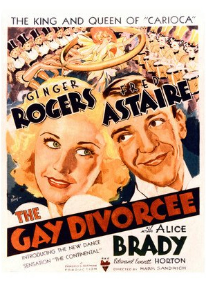

The Gay Divorcee
7th Academy Awards
(Oscars 1935)
5 Nominations, 1 Award
| Nominations | ||
|---|---|---|
| Category | Nominees | Result |
| Outstanding Production | RKO Radio | Nominated |
| Art Direction | Carroll Clark and Van Nest Polglase | Nominated |
| Sound Recording | Carl Dreher | Nominated |
| Music (Scoring) | Kenneth Webb, Max Steiner, and Samuel Hoffenstein | Nominated |
| Music (Song) "The Continental" |
Con Conrad and Herb Magidson | Won |